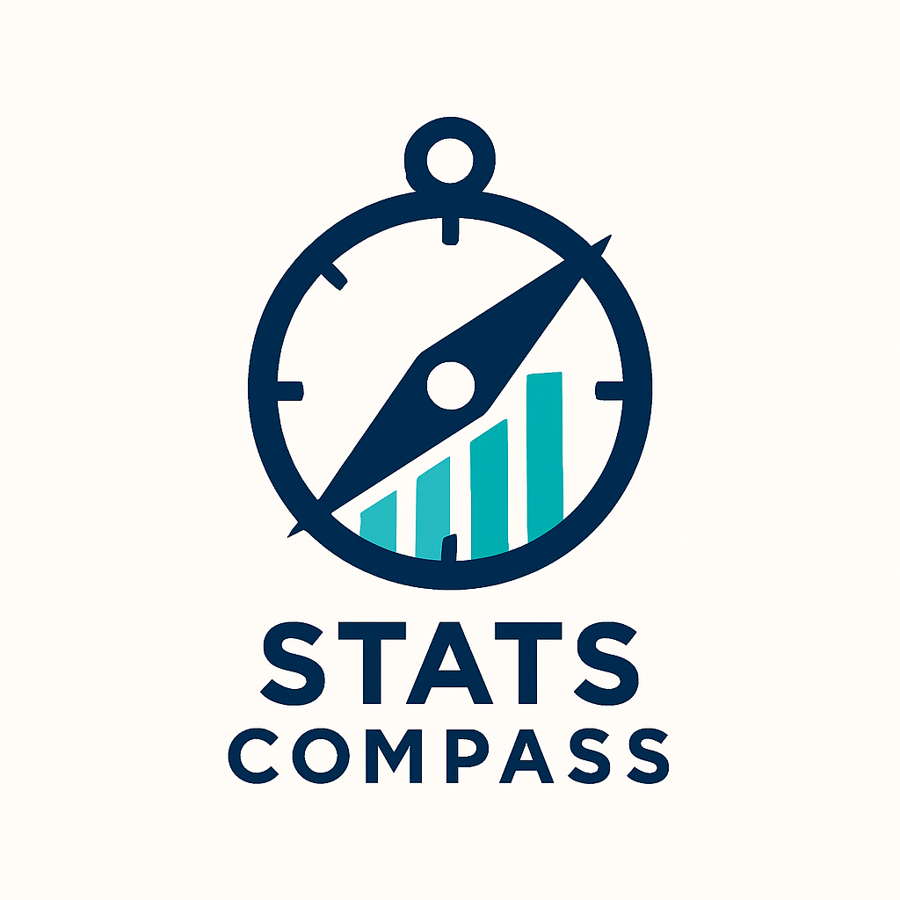
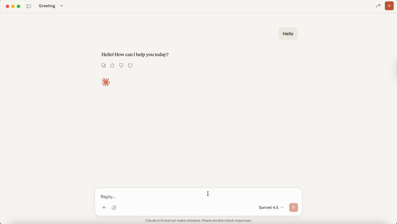
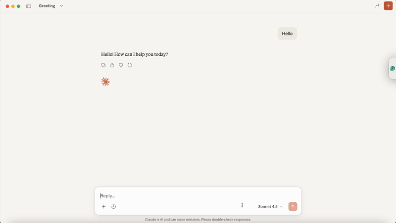
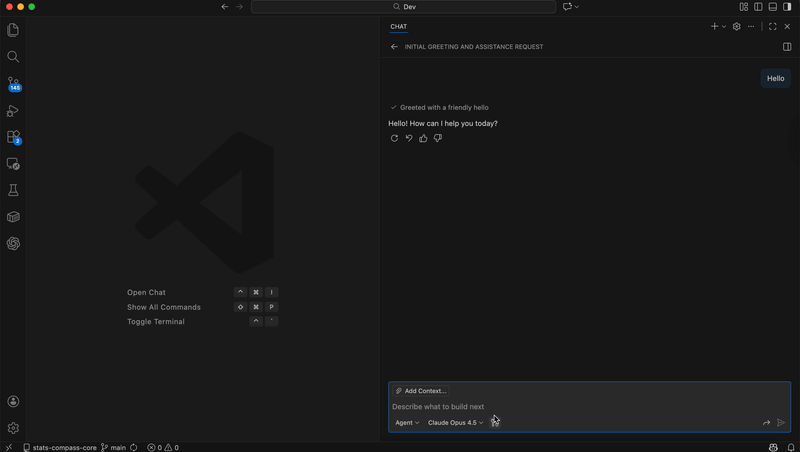

CSV, Excel, JSON, Parquet
Charts, histograms, heatmaps
Filter, merge, pivot, aggregate
CSV, Excel, charts as images

Creating visualizations with Claude

Data analysis in VS Code
Add to your claude_desktop_config.json:
{
"mcpServers": {
"stats-compass": {
"command": "uvx",
"args": ["stats-compass-mcp"]
}
}
}Add to your VS Code settings.json:
{
"mcp": {
"servers": {
"stats-compass": {
"command": "uvx",
"args": ["stats-compass-mcp"]
}
}
}
}Run this command in your terminal:
claude mcp add stats-compass -- uvx stats-compass-mcp run